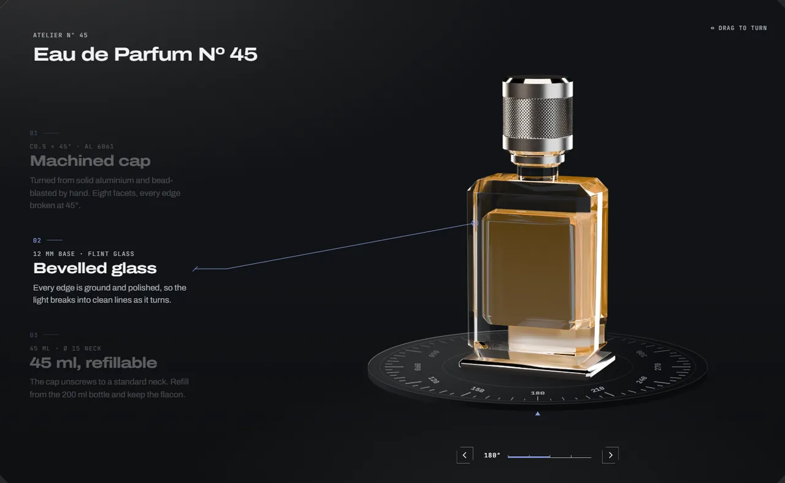
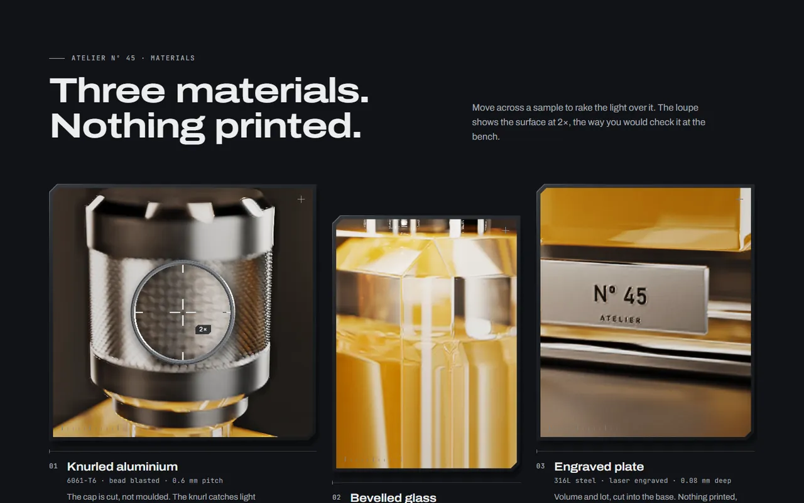
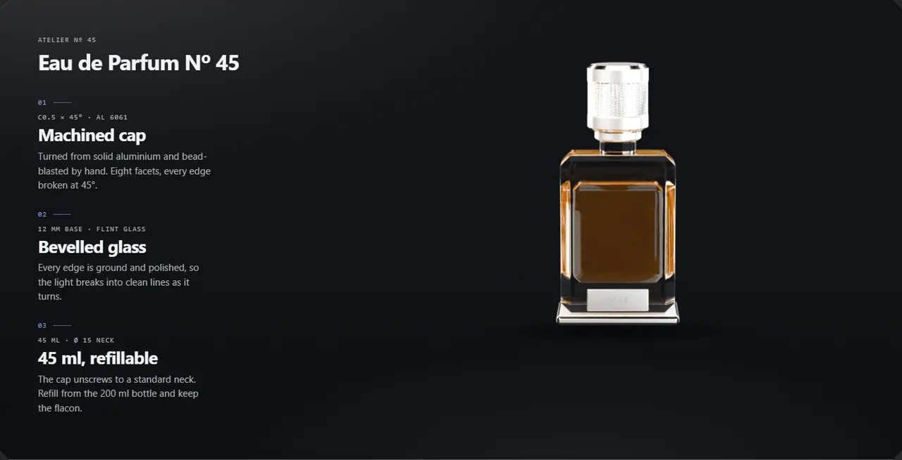
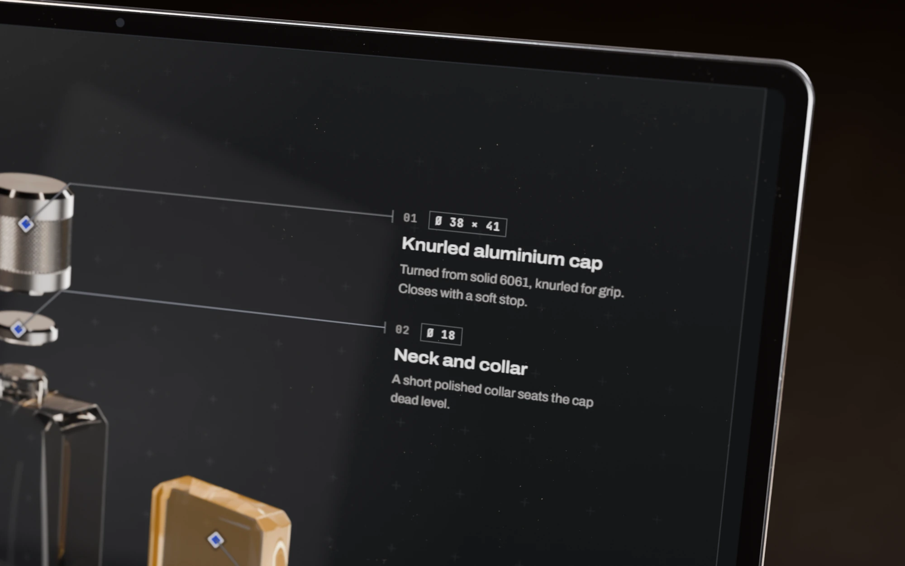
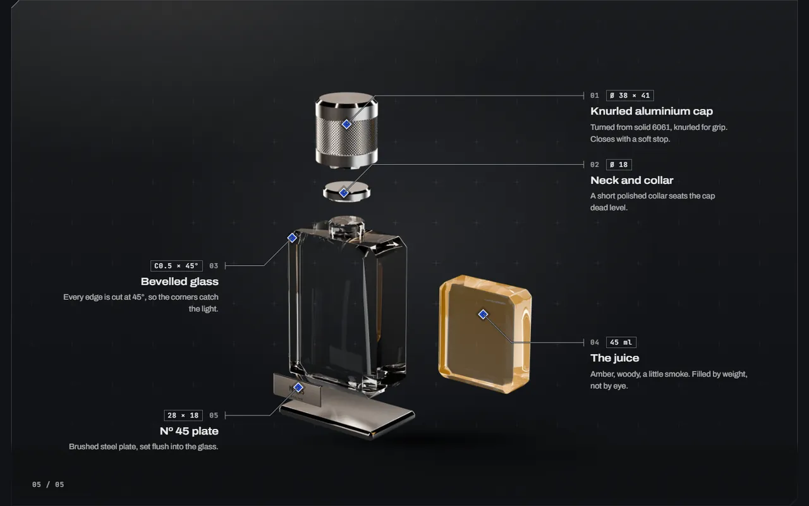
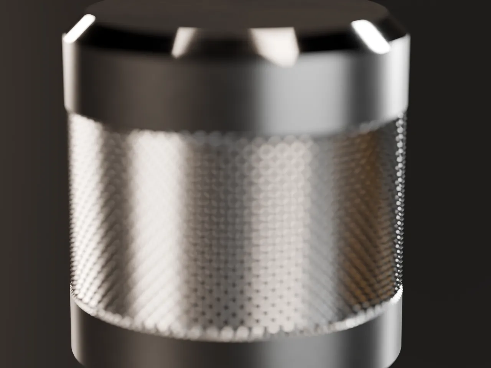
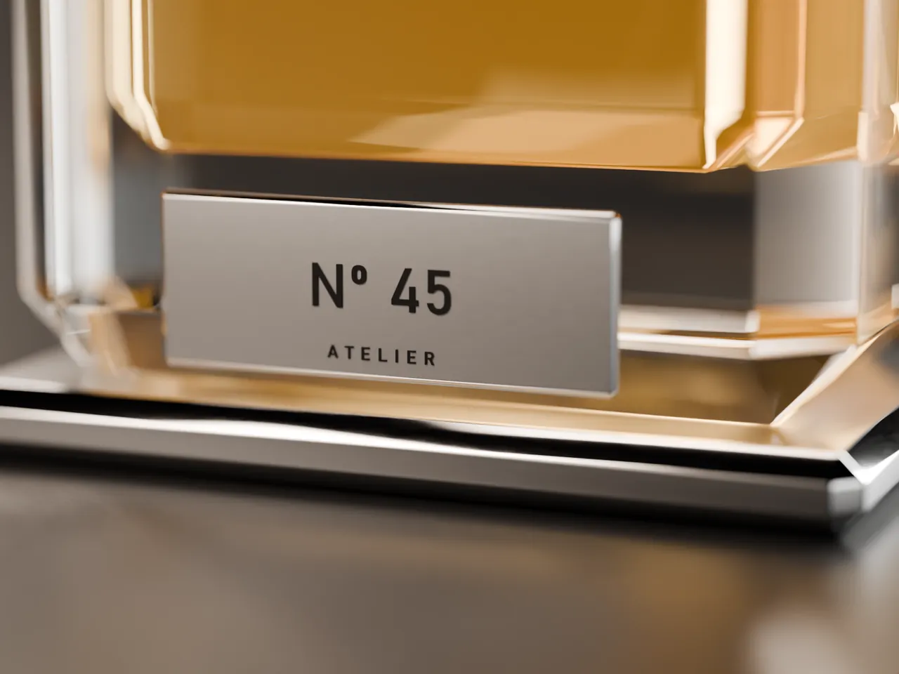
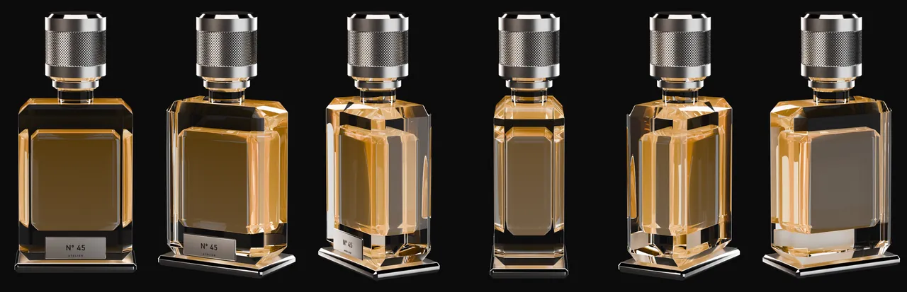
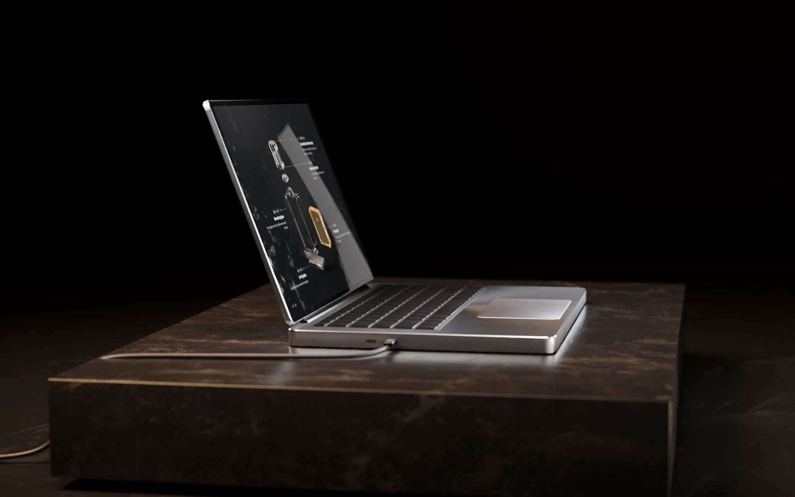

Proyecto adicional
Prototipo
Chamfer
Luz, material y profundidad para la página de producto, a partir de las fotos que la tienda ya tiene.
- Qué es
- Cinco secciones para tiendas Shopify, cada una en un solo archivo que se configura desde el editor.
- Para quién
- Tiendas de productos de diseño que quieren que sus fotos muestren textura y profundidad sin contratar a un programador.
- Estado
- Prototipo terminado en local. Sin publicar y sin probar todavía en una tienda real.
- Mi rol
- Fijé el objetivo, el presupuesto y las reglas; delegué en agentes de IA la investigación, la elección del negocio y la construcción; revisé el resultado y decido cuándo sale.
- Período
- Noviembre de 2026
- Herramientas
- Desarrollo asistido por IA · Liquid · JavaScript sin librerías · WebGL · Blender (Cycles) por script
El problema
Una tienda chica arma su página de producto con los bloques del editor, y al lado de la marca que admira se ve plana.
El editor de temas resuelve bien lo básico: foto, título, precio y botón. Sus bloques muestran la foto plana, sin giro, sin despiece y sin un primer plano del material, y el comerciante no tiene modelos 3D de su producto para armarlos. La otra salida es pagarle a un programador por una sola página.
Recorrido
Cada sección trabaja con fotos de la tienda: nadie tiene que modelar el producto en 3D.
Capturas de las demos, con el contenido de muestra en inglés de una marca ficticia.
-

El producto da la vuelta a medida que bajás por la página
Turntable arma un giro de 360° con 12 a 36 fotos de una vuelta completa. Al desplazarse, el frasco gira sobre un plato graduado y los textos aparecen por etapas, cada uno con una línea hasta su pieza.
Cómo lo comprobé Capturas en escritorio y en teléfono al principio, a la mitad y al final del recorrido, para ver cada etapa en su lugar.
-

Una lupa al doble para mirar el material como en el taller
Swatch muestra tres materiales en tarjetas. Al pasar el cursor por una, la luz barre la superficie y una lupa la amplía al doble. La luz rasante se dibuja con WebGL.
Cómo lo comprobé Una captura con WebGL apagado: las tres tarjetas siguen ahí, con sus fotos y sus textos.
-

Con movimiento reducido, la sección queda quieta y completa
Si el visitante pidió menos movimiento, ninguna sección deja un hueco. Turntable, por ejemplo, muestra el frasco de frente y las tres etapas a la vez, para que la página siga contando el producto.
Cómo lo comprobé Una captura con movimiento reducido de cada una de las cinco demos.
También hace
- Plinth Portada con el producto sobre un pedestal iluminado; usa WebGL y tiene versión sin WebGL.
- Vitrine Vitrina de dos a cuatro productos que se recorre con el teclado y se lee sin JavaScript.
- Responde al editor Cada sección se reinicia cuando el comerciante la agrega, la cambia o la quita en el editor de temas.
- Espera a verse Ninguna arranca su animación hasta entrar en pantalla.
- Guía de instalación Cada sección trae la suya en inglés: seis pasos y la lista de ajustes del editor.

El despiece, ampliado
Anatomy separa cada pieza del frasco y le pone su medida, como un plano de taller.

Al bajar por la página, el frasco se abre en cinco piezas. Cada una lleva su cota en tipografía mono y una línea hasta el punto que describe. Dos de esas piezas, de cerca: renders propios hechos en Blender por script.


Decisiones
Lo que cada sección tenía que cumplir antes de darla por buena.
Las tomaron los agentes de IA, dentro del objetivo, el presupuesto y las reglas que fijé yo. Yo revisé el resultado.
-
Se decidió
Que cada sección trabaje con las fotos que la tienda ya tiene.
Por quéLos comerciantes no tienen modelos 3D de sus productos.
Se descartóUn visor 3D. Sin modelos que cargarle, queda vacío.
-
Se decidió
Un solo archivo por sección, sin librerías y con un tope de 40 KB.
Por quéUn bloque pesado arruina la página que viene a mejorar.
Se descartóApoyarse en librerías 3D. Ese peso lo paga la tienda en cada visita.
-
Se decidió
Que cada sección tenga una versión estática completa.
Por quéCon movimiento reducido o sin WebGL, un efecto que falla deja un hueco en la página.
Se descartóOcultar la sección en esos casos. La página tiene que seguir mostrando el producto.
Cómo lo construí
Puse las reglas y delegué la construcción en agentes de IA, una sección por tanda.
-
Un método común.
Antes de la primera sección quedó escrito un brief único: qué entrega cada tanda, cómo se construye y cómo se verifica.
Escribí UNA sola implementación de la lógica (CSS + JS) y usala igual en
demo.htmly en el.liquid. La demo reemplaza los valores de Liquid por contenido de muestra, nada más.La traducción al inglés aparece sólo en la versión en inglés de esta página.
Del brief que siguió cada tanda, copiado tal cual. -
Una sección por tanda.
Cada tanda entregó su sección, una demo con el contenido de una marca de muestra, su guía de instalación en inglés y sus capturas.
-
Renders propios.
Los cuatro productos de muestra se modelaron y renderizaron en Blender por script, con Cycles: frente, primeros planos de material, un giro de 36 cuadros y un despiece.

Seis de los 36 cuadros del giro que usa la demo de Turntable. -
Revisión.
Cada demo se capturó en escritorio y en teléfono, incrustada, con movimiento reducido y sin WebGL, y las capturas se miraron una por una. El validador de temas de Shopify da 0 problemas en las cinco secciones.
Resultado
Cinco secciones terminadas y medidas en local, que todavía no corrieron en una tienda.
de 26,5 a 39,0 KB
pesa cada archivo, por debajo del tope de 40 KB
Cinco secciones, cada una en un solo archivo y sin librerías, y 0 problemas en el validador de temas de Shopify.
Prototipo terminado en local: las cinco secciones con su demo y su guía de instalación, y la web de la marca con cada sección andando. Nada está publicado y no hubo ninguna venta.
Qué falta
- Probarlo en una tienda Shopify real, con temas distintos.
- Publicarlo.
- Cobrar: el pago todavía no está conectado.
Qué cambiaría
Probar en una tienda de prueba antes de hacer la web de la marca.
Galería
La portátil de costado, sobre su losa de mármol.

Contacto
Escribime si tenés un producto para construir o un proceso para automatizar.
Respondo en el día.